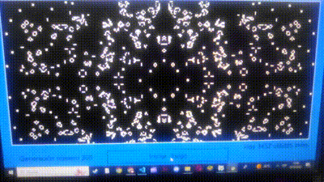

Implementación del Juego de la Vida de Conway

Este es un programa capaz de abrir una posición del Juego de la vida de Conway y hacer correr el juego. Está hecho en Python.
Mi nombre completo es Carmelo Vazquez, soy un programador aficionado y actualmente enfocado en el desarrollo en C++. Actualmente estudio en la Escuela de Educación Técnica N°2 "Independencia" y también estudio programación como autodidacta en mi tiempo libre.
Llevo estudiando programación desde mis 15 años, empezando en 2023, desde entonces he aprendido a programar Front-end, después Python y finalnente C++
Este es un programa capaz de abrir una posición del Juego de la vida de Conway y hacer correr el juego. Está hecho en Python.
Esta es una recreación del popular Snake hecho en la terminal con Python. Cuenta con la posibilidad de cambiar el tamaño del juego, de cambiar la velocidad e incluso tiene un modo de juego con obstáculos